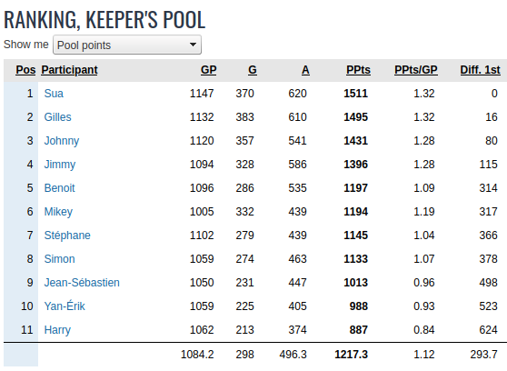

Masse Salariale
La masse salariale est de 96M US
Après la remise de l'alignement final, la masse salariale passera à 97M.
Tous les joueurs de l'équipe comptent sur la masse salariale sauf les joueurs dans le backstore.
On compte le plein salaire du joueur et non son "cap hit".
Pour les joueurs qui sont à leur premier contrat(ELC), un joueur doit avoir joué 10 matchs durant l'année courante pour que son salaire soit comptabilisé sur la masse salariale, sinon on comptabilise 500k$ sur la masse.
Si un pooler dépasse la masse salariale durant la saison ou s'il repêche plus de joueurs que la limite permise (30), il doit jeter un joueur au vidange pour respecter la masse salariale et en plus, il reçoit la première sanction qui s'applique de la liste ci-dessous:
On compte les 9 meilleurs avants, les 4 meilleurs défenseurs et 2 gardiens; donc vous devez avoir au moins 15 joueurs qui jouent dans la LNH (9A, 4D, 2G). Vous DEVEZ respecter cet alignement minimum (9A,4D,2G) à la remise de l'alignement en début de saison et à la fin de la période de repêchage du ballotage vers la fin de saison.
Pour tous joueurs: 1 but = 2 points, 1 passe = 1 point.
Pour les gardiens: 1 victoire = 2 points, 1 blanchissage = 3 points, défaite en prolongation ou fusillade = 1 points.
Quand on échange un joueur, les points accumulés par le joueur suivent le joueur dans sa nouvelle équipe.
Liste de protection: 7 avants, 3 défenseurs, 1 gardien + 2 joueurs au choix + tous les joueurs ayant joué moins de 200 matchs.
La date limite pour remettre la Liste de protection 2023-2024 est le 8 octobre 2023.
À la fin du prochain repêchage, chaque équipe aura 30 joueurs et une RÉSERVE (backstore) de jusqu'à 8 joueurs qui ne seront pas comptabilisés NI sur la masse salariale NI pour les points. Par contre, on pourra échanger les joueurs dans le backstore. Toutefois, l'équipe qui recevra ce joueur devra le comptabiliser sur sa masse salariale à moins que ça implique une transaction de backstore à backstore. De plus, si on échange un joueur de la réserve, on ne pourra en introduire un nouveau sur cette liste de réserve.
La date limite pour la remise de l'alignement de debut de saison : dimanche, 22 octobre 2023; Vous devez avoir un alignement minimum de 9A,4D,2G qui jouent dans la LNH.
La date limite des transactions pour la saison 2023-2024 est le jeudi 18 janvier 2024, 22H.
Dans une transaction impliquant des joueurs dans le backstore, vouz pouvez mettre un joueur dans votre backstore SEULEMENT si un de vos joueurs va aussi dans le backstore de l'autre partenaire d'échange.
La date limite pour sortir un joueur du backstore pour la saison 2023-2024 est le jeudi 15 février 2024, 22H. Vouz pouvez sortir un maximum de 2 joueurs du backstore et vous devez mettre un joueur au ballotage pour chaque joueur qui sort du backstore.
On ne peut pas échanger des choix qui vont au delà de deux ans.
Lottery PICK: À la fin de la saison, les 5 derniers du classement poolbino seront jumelés respectivement aux 5 dernières équipes du classement final de la saison régulières de la LNH pour la lotterie du repêchage. Le gagnant de la loterie aura le privilège de repêcher au premier rang lors du prochain repêchage. SEUL le gagnant de la loterie peut changer de position au repêchage et pour la première ronde seulement.
Pour l'ordre du ballotage, on prend le classement du pool le ??? février 2024, le dernier au classement choisit en premier et on remonte jusqu'au premier.
Un joueur choisit est automatiquement inséré dans l'alignement et est compté sur la masse salariale.
Il peut y avoir plusieurs tours, en autant que les joueurs choisis respectent la masse salariale
À la fin du processus, les joueurs non choisis retournent dans leurs équipes respectives ( dans leurs back store).
A la fin du processus, chaque équipe doit respecter un alignement minimum de 9A,4D,2G qui jouent dans la LNH.
|
Date |
Pooler1 |
Pooler2 |
|
21-avr-2024 |
ATTENTION! Cette table n'est plus MAJ. Voir Page 2024-2025 |
ATTENTION! Cette table n'est plus MAJ. Voir Page 2024-2025 |
|
15-jan-2024 |
Sua: C Brown & V Trocheck au ballotage, D Batherson & S Skinner dans lineup |
Yan-Erik: J Debrusk au ballotage, D Dvorsky dans lineup |
|
15-jan-2024 |
Gilles: V Tarasenko & T Barrie au ballotage, A Panarin & T Jarry dans lineup |
Harry: N Schmaltz & M Zuccarello au ballotage, G Denisenko & R Suzuki dans lineup |
|
18-jan-2024 |
Jean-Seb: O Power, W Johnston, K Letang, choix 1ere ronde 2024 |
Jimmy: V Hedman, S Durzi, choix de 3e ronde 2024 |
|
18-jan-2024 |
Gilles: S Jarvis , T Toffoli , choix 3e ronde de Simon 2024, choix de 4e ronde de Mike 2024 |
Stephane: K Fiala, P Kotchetkov, B Faber, M Knies, J Huberdeau au ballot, E Tolvanen dans lineup |
|
18-jan-2024 |
Gilles: C Verhaeghe |
Jean-Seb: J McCann, E Sale |
|
18-jan-2024 |
Benoit: J Drouin |
Sua: Choix de 4e ronde 2024 |
|
18-jan-2024 |
Simon: C Stephenson |
Harry: J Tavares |
|
17/18-jan-2024 |
Benoit: J Gibson au ballotage, D Simashev dans lineup |
Jean-Seb: J Klingberg & A Newhook au ballotage, Q Musty & J Kulich dans lineup |
|
17-jan-2024 |
Stephane: S Jarvis, T Toffoli, E Rodrigues, choix de 4e 2024 de Mike. |
Sua: M Duchene & B Marchand |
|
9-jan-2024 |
Harry: M Sergachev |
Sua: M Rielly |
|
7-jan-2024 |
Harry: W Wallinder, N Foot, R Harvey-Pinard, Choix de 4e ronde 2024 |
Stephane: E Lindholm |
|
7-jan-2024 |
Simon: J Robertson, C Addison, choix 5e ronde de Harry 2024. |
Sua: Z Hyman, T Toffoli, J Drouin |
|
7-jan-2024 |
Benoit: V Vanecek, B Wheeler |
Harry: J Kotkaniemi |
|
6-jan-2024 |
Sua: V Trocheck |
Harry: E Lindholm, C Stephenson, B Wheeler, choix de 3eme ronde 2025 |
|
6-jan-2024 |
Jimmy: Guentzel, Merzlikins(BS) |
Stephane: M Necas, A Schmidt, P Tomassino, M Boldy(BS), choix de 4eme ronde 2024 |
|
6-jan-2024 |
Jimmy: Pénalité dépassement de cap. Perte de son 2e choix 2025, reprend 3e choix 2025 |
Jimmy: Z Werenski, R Sandin au ballotage, T Demko, J Swayman dans l'alignement. |
|
6-jan-2024 |
Harry: S Montembault |
Jimmy: K Letang |
|
5-jan-2024 |
Harry: J Faulk |
Yan-Erik: E Brannstrom, S Honzek |
|
3-jan-2024 |
Harry: M Barzal, M Zuccarello, S Cossa, T Raddysh, choix 2e ronde 2024. |
Johnny: A Kopitar, V Nichushkin, choix 3e ronde 2024 de Gilles |
|
3-jan-2024 |
Yan-Erik: N Hischier, S Theodore, D Jiricek, R Leonard, I Samsonov, A Lundell et 1er choix 2024. |
Johnny: C Hellebuyck, V Dunn et J Pavelski |
|
30-dec-2023 |
Yan-Erik: T Bertuzzi au ballotage, O Moore dans l'alignement. |
Mikey: K Kakko au ballotage, P Buchnevich dans l'alignement. |
|
22-dec-2023 |
Harry: M Kasper, J Korpisalo |
Gilles: B Faber, T Willander |
|
19-dec-2023 |
Yan-Erik: J Pavelski |
Harry: B Faber, R Greig, T Willander |
|
19-dec-2023 |
Benoit: F Gustavsson |
Harry: D Wolf, choix de 2e ronde de Benoit 2025. |
|
17-dec-2023 |
Johnny: M Barzal, E Kane |
Yan-Erik: M Beniers, B Hayton, J Debrusk, choix de 3e ronde de Johnny 2024. |
|
13-dec-2023 |
Jimmy: B Boeser, choix de 4e ronde 2024 de Harry |
Yan-Erik: M Tkachuk, D Guenther, choix de 2e ronde de Jimmy 2024. |
|
13-dec-2023 |
Harry: C Barlow, choix de 4e ronde 2025 |
Yan-Erik: choix de 4e ronde 2024. |
|
2-nov-2023 |
Gilles: JT Miller |
Yan-Erik: J Kyrou, C Gauthier
|
|
21-oct-2023 |
Harry: Choix 2e ronde 2024, R Suzuki |
Simon: F Hronek
|
|
14-oct-2023 |
Jimmy: Draft trop de joueurs (31), drop J Spence et perd choix de 3e ronde 2025 |
|
|
14-oct-2023 |
Yan-Erik: Choix #44 et #50 2023 |
Johnny: choix de 4e ronde 2024
|
|
14-oct-2023 |
Mike: Choix 3e et 5e ronde 2024 |
Yan-Erik: choix de 2e ronde 2024
|
|
8-oct-2023 |
Johnny: J Eriksson Ek et M Zuccarello |
Yan-Erik: C Mittelstadt, B Rust, O Bjorkstrand , choix de 4e ronde (35e) 2023
|
|
8-oct-2023 |
Simon: G Forsling, J Marchessault |
Stephane: C Kreider, choix 5e ronde 2024
|
|
8-oct-2023 |
Harry: Choix de 3e ronde 2024 de Gilles |
Gilles: Choix #42 et #45 2023
|
|
30-sept-2023 |
Harry: J Pavelski |
Sua: D Holloway, K Kahkonen
|
|
30-sept-2023 |
Benoit: A Fox, W Eklund |
Gilles: N Dobson
|
|
29-sept-2023 |
Mike: L Ullmark |
Sua: S Jarvis, choix de 1ere ronde 2024 de Sua
|
|
27-sept-2023 |
Jimmy: J Kemell, choix de 2e ronde 2023 (#12) |
Benoit: choix de 1ere ronde 2023 (#7)
|
|
24-sept-2023 |
Mike: J Chychrun, D Pastrnak |
Benoit: J Slavkovsky, M Savoie, choix #5, #11, #14 2023
|
|
10-sept-2023 |
Harry: V Trocheck, N Schmaltz, choix de troisième ronde de 2024-2025 |
Stephane: Brad marchand, choix 49 de Harry 2023
|
|
10-sept-2023 |
Harry: M Rielly, J Drysdale, L Mailloux, K Kakhonen |
Gilles: B Burns, J Korpisalo
|
|
28-juin-2023 |
Harry: PL Dubois, M Frost, C Lucius, S Pinto |
Yan-Erik: JT Miller, E Kane, J Markstrom
|
|
28-juin-2023 |
Gilles: A Ovechkin |
Yan-Erik: M Barzal, S Pinto
|
|
28-avr-2023 |
Sua: J.Pavelski |
Yan-Erik: J. Eriksson-Ek
|
|
28-avr-2023 |
Gilles: W.Eklund, A.Holtz, L.Mailloux, choix de 2e ronde de Ben en 2024 . |
Benoit: B.Clarke
|
|
28-avr-2023 |
Yan-Erik: Choix de 1ere ronde de Ben 2024 |
Benoit: N.Dobson
|
|
28-avr-2023 |
Yan-Erik: C.Caufield, L.Hughes, M.Rossi, Askarov, O.Zellweger, F.Nazar, M.Frost, choix 1ere ronde 2023 de Gilles (choix #4) |
Gilles: K.Kaprizov, M.Rantanen
|
|
20-avr-2023 |
Yan-Erik: K.Dach |
Stephane: G.Forsling
|
|
20-avr-2023 |
Yan-Erik: C.Keller, L.Cooley |
Benoit: D.Pastrnak
|
|
22-fev-2023 |
Ballotage (disponibles): |
Ballotage (selection):
|
|
15-fev-2023 |
Sua: P Kessel & M Mcleod au ballotage, L Ullmark & C Zary dans lineup |
|
|
21-jan-2023 |
Jimmy: Depasse le cap salariale de 96M. Perd son choix de 3e ronde 2024. Jette E Malkin pour se conformer au CAP. |
|
|
19-jan-2023 |
Jimmy: M Weegar au ballotage, P Tomasino dans lineup |
|
|
19-jan-2023 |
Gilles: T Hertl, C Gauthier, choix de 2e ronde en 2024 |
Yan-Erik: J Pavelski, G Forsling |
|
19-jan-2023 |
Jimmy: A Ekblaad, G Landeskog(BS) |
Yan-Erik: V Dunn, A Nedeljkovic(BS) |
|
19-jan-2023 |
Mike: M Ferraro |
Yan-Erik: choix de 5e ronde 2024 |
|
19-jan-2023 |
Gilles: choix de 4e ronde 2023, T Jarry, I Askarov |
Yan-Erik: C Hellebuyck |
|
19-jan-2023 |
Ben: choix de 1ere ronde 2023, D Larkin, M Seider, K Korchinsky(BS), J Kemmel |
Yan-Erik: D Pastrnak, R Johnson(BS), choix de 3e ronde 2023. |
|
18-jan-2023 |
Gilles: choix de 4e ronde 2023, choix de 3e ronde 2024, M Kasper, O Walhstrom, D Mercer |
Benoit: R Hintz |
|
18-jan-2023 |
Stephane: choix de 2e ronde 2023, J Petry, P Kane(BS) |
Simon: T Toffoli, C Fowler, M Comtois(BS) |
|
3-jan-2023 |
Mike: K Fiala, R Sandin, S Jarvis, X Bourgault, choix de 1ere ronde 2024 |
Sua: D Batherson, M Mcleod, choix de 5e ronde 2023 |
|
28-dec-2022 |
Mike: A Svechnikov, P Buchnevich, S Perunovich, J Pelletier, choix de 1ere ronde 2023 |
Sua: Q Hughes, T Konecny, J Eriksson-Ek, choix de 4e ronde 2024 |
|
26-dec-2022 |
Mike: S Edvinson, K Kappo, O Tippett |
Yan-Erik: N Dobson, choix de 3e ronde 2023 |
|
26-dec-2022 |
Mike: B Boeser, M Bourque, choix de 1ere ronde 2023 de Stephane, choix de 1ere ronde 2024 de Stephane |
Benoit: D Pastrnak |
|
22-dec-2022 |
Harry: D Holloway, J Slavin, choix de 5e ronde 2024 |
Stephane: C Fowler |
|
12-dec-2022 |
Simon: Z Hyman dans lineup, C Timmins au ballot |
|
|
11-dec-2022 |
Harry: F Gustavsson |
Sua: Choix de 5e ronde 2024, P Kessel |
|
9-dec-2022 |
Simon: Z Hyman (BS) |
Stephane: K Dach, D Fabbro (BS), Choix 4e ronde 2023 de Mike |
|
9-dec-2022 |
Harry: B Schenn, choix de 5e et 6e ronde 2023 |
Benoit: E Kuznetsov |
|
9-dec-2022 |
Harry: E Brannstrom et choix de 6e ronde 2023 de Yan-Erik |
Stephane: MA Fleury |
|
8-dec-2022 |
Harry: choix de 5e et 6e ronde 2023 |
Stephane: J Marchessault |
|
07-dec-2022 |
Benoit: N Mackinnon |
Yan-Erik: PL Dubois, Lekkerimaki et Kakko. |
|
04-dec-2022 |
Harry: A Lekhonen, R Hartman et JJ Peterka |
Yan-Erik: T Hertl |
|
30-nov-2022 |
Harry: E Kuznetsov, E Kane, P Kessel, C York |
Yan-Erik: A Ovechkin, D Krejci |
|
29-nov-2022 |
Simon: B Horvat, M Giordano, C Talbot (BS) |
Stephane: J Huberdeau, E Branstrom, M Murray (BS) |
|
28-nov-2022 |
Johnny: F Andersen, S Cossa |
Yan-Erik: J Bennington |
|
23-oct-2022 |
Stephane: M Heiskanen |
Benoit: A Lafreniere, K Guhle, choix de 1ere 2024 |
|
22-oct-2022 |
Yan-Erik: M Ferraro |
Harry: V Soderstrom |
|
19-oct-2022(draft) |
Stephane: N. Suzuki, D. Nurse |
Simon: T. Krug, J. Tavares |
|
15-oct-2022(draft) |
Stephane: Choix no 52 2022, choix de 3e ronde 2024, choix de 6e ronde 2023 |
Simon: D. Kuemper, Lasse Thompson |
|
15-oct-2022(draft) |
Stephane: Choix de no 4 2022 |
Sua: J. Hughes, choix no 36 2022 |
|
14-oct-2022 |
Johnny: Choix de 4e ronde 2023 |
Sua: choix no 44 et no 59 2022 |
|
14-oct-2022 |
Johnny: Choix de 4e ronde 2023 |
Harry: choix no 48 et no 55 2022 |
|
12-oct-2022 |
Stephane: D. Kuemper |
Sua: choix de 3e ronde 2022 (no 33), choix de 3e ronde 2023 de Jimmy |
|
11-oct-2022 |
Harry: G. Denisenko, choix de 5e ronde 2022 (no 50) |
Jean-Seb: choix de 6e ronde 2023 |
|
10-oct-2022 |
Johnny: Devon Toews, choix de 3e ronde 2022 (no 24) |
Sua: choix de 1ere ronde 2022 (no 4), choix de 2e ronde 2022 (no 15) |
|
6-oct-2022 |
Yan-Erik: V. Soderstrom, choix de 3e ronde 2022 de Jimmy (no 35) |
Jimmy: choix de 3e ronde 2022 de Johnny (no 26) |
|
6-oct-2022 |
Yan-Erik: choix de 6e ronde 2022 de Stephane (no 58) |
Stephane: choix de 6e ronde 2023 |
|
6-oct-2022 |
Jimmy: Weegar, choix de 5e ronde 2022 de Stephane (no 47), choix de 4e ronde 2023 |
Stephane: Tolvanen, choix de 3e ronde 2022 de Yan-Erik (no 33), choix de 3e ronde 2023 |
|
6-oct-2022 |
Mikey: S. Bennett |
Simon: M. Rasmussen, choix de 4e ronde 2023 de Mike |
|
6-oct-2022 |
Mikey: Konecny, choix de 5e ronde 2022 de Harry (no 54) |
Yan-Erik: choix de 4e ronde 2022 de Mike (no 40) |
|
6-oct-2022 |
Simon: A. Turcotte, E. Brannstrom |
Jimmy: A. Tuch, choix de 3e ronde 2023 de Simon |
|
5-oct-2022 |
Benoit: choix de 4e ronde 2022 (37e choix) |
Johnny: C. Mittelstadt |
|
5-oct-2022 |
Benoit: choix de 1ere ronde 2023, choix de 2e ronde 2022 (14e choix) |
Stephane: A. Lafreniere, A. Romanov |
|
5-oct-2022 |
Simon: A. Kaliyev, choix de 1ere ronde 2022 (6e choix) |
Benoit: R. Thomas |
|
19-sep-2022 |
Yan-Erik: 2 choix de 3e ronde 2022 (26e et 27e choix) |
Johnny: Choix de 2e ronde de Yan-Erik 2023 |
|
25-aout-2022 |
Yan-Erik: T.Konecny |
Benoit:R. Strome |
|
25-aout-2022 |
Yan-Erik: K.Shattenkirk |
Harry: K.Lankinen |
|
8-jul-2022 |
Yan-Erik: Choix 1ere ronde Mike (7e), S. Edvinsson |
Mike: Choix 1ere ronde de Sylvain (3e) |
|
8-jul-2022 |
Jean-Seb: Choix 2e ronde Benoit (12e), D. Cozens |
Benoit: Choix 1ere ronde de Jean-Seb(6e) |
|
5-juin-2022 |
Yan-Erik: R.Ellis, O.Tippet |
Johnny: N.Kadri |
|
14-mai-2022 |
Simon: P.Grubauer |
Harry: Choix 4e ronde 2023 |
|
13-mai-2022 |
Sua: R.Pulock |
Gilles: Choix 3e ronde 2022 de Sua |
|
13-mai-2022 |
Sylvain: T.Krug |
Yan-Erik: C.York, Choix 3e ronde 2022 de Sylvain |
|
13-mai-2022 |
Sylvain: T.Meier, V.Trocheck |
Yan-Erik: Choix 1ere ronde 2022 de Sylvain |
|
2-mai-2022 |
Harry: F.Hronek |
Yan-Erik: N.Kadri |
|
5-mar-2022 |
Sylvain: Choisit Z.Hyman du ballotage. |
Jean-Seb: Choisit A.Burakovsky du ballotage |
|
5-mar-2022 |
Ballotage: Joueurs disponibles - M.Hoffman, A.Martinez, P.Kessel, L.Couture, B.Nelson, Z.Hyman, A.Burakovsky |
|
|
3-mar-2022 |
Sylvain: B.Nelson et L.Couture au ballot, N.Foot et D.Holloway dans l'alignement |
Gilles: A.Burakovsky et Z.Hyman au ballot, L.Hughes et B.Clarke dans l'alignement |
|
22-jan-2022 |
Yan-Erik: R.Strome (BS) |
Harry: P.Grubauer (BS) |
|
21-jan-2022 |
Yan-Erik: E.Kuznetsov |
Harry: C.Giroux, A.Boqvist, A.Newhook, A.Texier |
|
19-jan-2022 |
Harry: J. Gaudreau |
Gilles: T. Barrie, V. Heinola, 3e ronde (2022), 2e ronde (2023), 3e ronde (2023) |
|
19-jan-2022 |
Harry: N. Kadri, A. Killorn, K. Letang, B. Burns, J. Marchessault |
Sua: W. Nylander, R. Josi, I. Sorokin, J. Bean, K. Fiala |
|
19-jan-2022 |
Harry: M.Hoffman & A.Martinez au ballot, A.Nylander & O.Juolevi dans lineup |
|
|
17-jan-2022 |
Yan-Erik: T.Meier |
Johnny: S.Reinhart, M.Beniers, choix de 1ere ronde de YE 2022 |
|
15-jan-2022 |
Yan-Erik: T.Krug |
Jimmy: J.Swayman |
|
15-jan-2022 |
Yan-Erik: C.Giroux |
Mikey: T.Bjornfoot, choix 2e ronde Harry 2022 |
|
15-jan-2022 |
Yan-Erik: P.Kessel au ballotage, S.Cossa dans lineup |
|
|
14-jan-2022 |
Simon: D.Hamilton |
Harry: K.Shattenkirk |
|
13-jan-2022 |
Yan-Erik: M.Rantanen, G.Landeskog et T.Jarry |
Benit: B.Boeser, J.Chychrun, M.Blackwood, S.Couturier, A.Holtz, choix de 1ere ronde de Harry en 2023 |
|
14-dec-2021 |
Yan-Erik: P.Kessel, choix de 1ere ronde 2023, choix de 2e ronde 2022 |
Harry: JT Miller |
|
08-dec-2021 |
Mike: D.Pastrnak, choix de 1ere ronde 2022 |
Sua: J.Campbell,E.Pettersson,M.Bunting |
|
04-dec-2021 |
Harry: J.Markstrom, V.Heinola(BS) |
Johnny: 1er ronde 2022, J.Oettinger, J.Roslovic, M.Pacioretty(BS) |
|
21-oct-2021 |
Harry: R.Ristolainen |
Yan-Erik: T. Bjornfoot, Choix de 5e ronde 2022 |
|
16-oct-2021 |
Harry: J. Korpisalo |
Yan-Erik: Choix de 5e ronde 2021 (#47) |
|
16-oct-2021 |
Mike: Choix de 4e ronde 2021 (#46) |
Jean-Seb: Choix de 5e ronde de Mike 2022 |
|
16-oct-2021 |
Gilles: Choix de 3e ronde 2021 (#32) |
Johnny: Choix de 3e ronde de Gilles 2022 |
|
6-oct-2021 |
Simon: Choix de 4e et 5e ronde 2021 (no 43, no 45) |
Yan-Erik: Choix de 4e et 5e ronde de Simon 2022 |
|
6-oct-2021 |
Johnny: Choix de 4e et 5e ronde 2022 |
Yan-Erik: R.Ristolainen, Choix de 4e ronde de Johnny 2021 (no 37) |
|
5-oct-2021 |
Jimmy: Choix de 4e ronde 2022 |
Sua: Choix de 4e ronde de Sua 2021, choix de 5e et 6e ronde de Jimmy 2021 |
|
5-oct-2021 |
Yan-Erik: Choix de 5e ronde 2021 de Sylvain |
Sylvain: B. Nelson |
|
5-oct-2021 |
Gilles: Choix de 1ere ronde 2021 (2e choix) |
Sylvain: E.Merzlikins, choix de 1ière ronde 2021 (7e choix) |
|
27-sept-2021 |
JS: Choix de 2e ronde 2021 (22e choix) |
Benoit: Noah Hanifin |
|
18-sept-2021 |
Jimmy: A.Nedeljkovic |
Sua: R.Sandin, S.Jarvis |
|
30-aug-2021 |
Yan-Erik: D.Larkin, F.Hronek |
Gilles: M.Reilly |
|
12-aug-2021 |
Jean-Seb: B.Wheeler |
Harry: Choix de 4e ronde 2021 de Simon |
|
12-aug-2021 |
Jean-Seb: choix de 4e ronde en 2021 de Simon |
Gilles: choix de 4e ronde en 2022 |
|
5-aout-2021 |
Benoit: K.Shattenkirk |
Harry: Choix 5e ronde, choix de 6e ronde 2021 |
|
3-aout-2021 |
Sylvain: B.Horvat et J.Puljujarvi |
Yan-Erik: Choix 2e ronde, choix de 4e ronde 2021 de Yan-Erik |
|
23-jul-2021 |
Jean-Seb: P.Laine, J.Norris et un choix de 2e ronde en 2022 |
Gilles: Choix 1ere ronde 2021 (#3), R.Hintz, M.Ekholm, choix de 3e ronde 2022 |
|
23-jul-2021 |
Harry: R.Strome, Choix de 5e ronde 2021 |
Yan-Erik: B.Nelson, Choix de 2e ronde 2021 |
|
4-juin-2021 |
Mike: Q.Hughes |
Yan-Erik: A.Boqvist, choix de 1ere ronde de Harry (8e) 2021 |
|
29-mai-2021 |
Sylvain: T.Toffoli |
Yan-Erik: A.Newhook, choix de 4e ronde 2021 de Sylvain |
|
29-mai-2021 |
Sylvain: J.Slavin, A.Duclair |
Harry: J.Oettinger |
|
28-mai-2021 |
Yan-Erik: A.Ekblad |
Benoit: C.Keller, B.Schenn |
|
22-mai-2021 |
Yan-Erik: M.Seider |
Harry: T.Barrie |
|
21-mai-2021 |
Yan-Erik: C.Keller |
Harry: A.Ovechkin |
|
21-mai-2021 |
Yan-Erik: S.Reinhart, A.Texier, M.Blackwood |
Harry: MA.Fleury, B.Wheeler |
|
7-avr-2021 |
(Round 1)
|
(Round 2)
|
|
5-avr-2021 |
Yan-Erik: R.Strome sort du backstore, T. Liljegren au ballotage |
Gilles: M.Rossi & M.Frost sortent du backstore, M.Ekholm & M.Dumba au ballotage |
|
3-avr-2021 |
Yan-Erik: MA Fleury sort du backstore, D.Sprong au ballotage |
|
|
22-mar-2021 |
Mike: C.Hart, choix 1ere ronde 2021 de Harry, choix de 2e ronde 2022 de Yan-Erik |
Yan-Erik: P.Grubauer |
|
13-mar-2021 |
Jimmy: J.Eichel, V.Soderstrom, choix 1ere ronde 2021 |
Simon: F.Forsberg, A.Tuch |
|
11-mar-2021 |
Yan-Erik: T.Toffoli |
Jean-Seb: S.Jones, choix de 1ere ronde 2021 |
|
2-mar-2021 |
Simon: J. Petry |
Gilles: J.Drysdale, choix de 2e ronde 2022 |
|
2-mar-2021 |
Simon: Met J.Drysdale dans le roster, M.Ferraro au ballotage |
|
|
1-mar-2021 |
Yan-Erik: J.Chychrun, T.Liljegren, D.Sprong et de son choix de 3e ronde 2022, choix de 4e ronde 2021. |
Benoit: M.Heiskanen & M.Stone |
|
25-fev-2021 |
Yan-Erik: MA Fleury (BS) |
Sua: D. Gurianov, L. Ullmark (BS) |
|
25-fev-2021 |
Sua: Sort A. Nedeljkovic du backstore, L. Kunin au dallot |
|
|
20-fev-2021 |
Yan-Erik: V.Trochek et d'un choix de 1ere ronde 2021 de Harry |
Benoit: T. Konecny, K. Kakko, Choix 2e ronde 2021 de Benoit |
|
13-fev-2021 |
Simon: J. Anderson, S. Varlamov |
Benoit: PL Dubois, S. Knight |
|
7-fev-2021 |
Yan-Erik: A. Ovechkin, L. Ullmark (BS) |
Harry: T. Hertl, T. Tatar, M. Seider, I. Sorokin (BS) |
|
26-jan-2021 |
Sua: T. Teravainen, choix 3e ronde de Jimmy 2022 |
Jimmy: A. Debrincat, N. Lundqvist |
|
23-jan-2021 |
Jimmy: M. Boldy, choix 3e ronde de YE 2022 |
Yan-Erik: B. Wheeler |
|
15-jan-2021 |
Sylvain: Thomas Harley, Choix 4e ronde de Harry 2021, choix de 4e ronde de YE 2021 |
Yan-Erik: Ryan Strome |
|
14-jan-2021 (Draft) |
Gilles: Choix 4e ronde de Simon 2021 |
Simon: Choix de 5e ronde 2020 (no 50) et 6e ronde 2020 (no 56) |
|
14-jan-2021 (Draft) |
Jimmy: Choix 3e ronde 2020 (no 31) |
Mike: Choix de 3e ronde 2021 Jimmy |
|
5-jan-2021 |
Harry: Choix de 4e ronde 2020-2021 de Harry (42e) |
Yan-Erik: Choix de 4e ronde 2021-2022 de Harry |
|
5-jan-2021 |
Johnny: B. Hayton |
Yan-Erik: Choix de 2e ronde 2020-2021 de Johnny (23e) |
|
Pooler |
Ronde 1 |
Ronde 2 |
Ronde 3 |
Ronde 4 |
Ronde 5 |
Ronde 6 |
Ronde 7 |
Ronde 8 |
|
Benoit |
Choix #1-LOTTERY PICK |
Choix #12 |
Choix #23 |
Choix #34 |
Choix #45 |
Choix #56 |
Choix #67 |
Choix #78 |
|
Harry |
Choix #2A Fantilli |
Choix #13 |
Choix #24 |
Choix #35 |
|
|
Choix #68 |
Choix #79 |
|
Mike |
Choix #3Z Benson |
Choix #14 |
Choix #25 |
Choix #36 |
Choix #47 |
Choix #58 |
Choix #69 |
Choix #80 |
|
Gilles |
Choix #4 |
Choix #15 |
Choix #26 |
Choix #37 |
Choix #48 |
Choix #59 |
Choix #70 |
Choix #81 |
|
Stephane |
Choix #5 |
Choix #16 |
Choix #27 |
Choix #38 |
Choix #49 |
Choix #60 |
Choix #71 |
Choix #82 |
|
Johnny |
Choix #6 |
Choix #17 |
Choix #28 |
Choix #39 |
Choix #50 |
Choix #61 |
Choix #72 |
Choix #83 |
|
Jimmy |
Choix #7 |
Choix #18 |
Choix #29 |
Choix #40 |
Choix #51 |
Choix #62 |
Choix #73 |
Choix #84 |
|
Jean-Seb |
Choix #8 |
Choix #19 |
Choix #30 |
Choix #41 |
Choix #52 |
Choix #63 |
Choix #74 |
Choix #84 |
|
Simon |
Choix #9 |
Choix #20 |
Choix #31 |
Choix #42 |
Choix #53 |
Choix #64 |
Choix #75 |
Choix #86 |
|
Yan-Erik |
Choix #10 |
Choix #21 |
Choix #32 |
Choix #43 |
Choix #54 |
|
Choix #76 |
Choix #87 |
|
Sua |
Choix #11 |
Choix #22 |
Choix #33 |
Choix #44 |
Choix #55 |
Choix #66 |
Choix #77 |
Choix #88 |
|
Pooler |
Ronde 1 |
Ronde 2 |
Ronde 3 |
Ronde 4 |
Ronde 5 |
Ronde 6 |
Ronde 7 |
Ronde 8 |
|
|
Simon |
Harry |
Gilles |
Stephane |
||||||
|
Yan-Erik |
Gilles |
Mike |
Johnny |
Mike |
|||||
|
Jean-Seb |
Jimmy |
||||||||
|
Gilles |
Johnny |
||||||||
|
Mike |
Yan-Erik |
Stephane |
Yan-Erik |
||||||
|
Jimmy |
Jean-Seb |
Yan-Erik |
!!!VOID!!! |
Stephane |
|||||
|
Benoit |
Yan-Erik |
Gilles |
Gilles |
Sua |
|||||
|
Stephane |
Mikey |
Harry |
Harry |
Harry |
|||||
|
Harry |
Jimmy |
Simon | |||||||
|
Johnny |
Yan-Erik |
Harry |
Yan-Erik | ||||||
|
Sua |
Sua |
|
Pooler |
Ronde 1 |
Ronde 2 |
Ronde 3 |
Ronde 4 |
Ronde 5 |
Ronde 6 |
Ronde 7 |
Ronde 8 |
|
Simon |
||||||||
|
Yan-Erik |
Harry |
|||||||
|
Jean-Seb |
||||||||
|
Gilles |
||||||||
|
Mike |
||||||||
|
Jimmy |
!!!VOID!!! |
Jimmy |
||||||
|
Benoit |
Harry |
|||||||
|
Stephane |
||||||||
|
Harry |
||||||||
|
Johnny |
||||||||
|
Sua |
Harry |